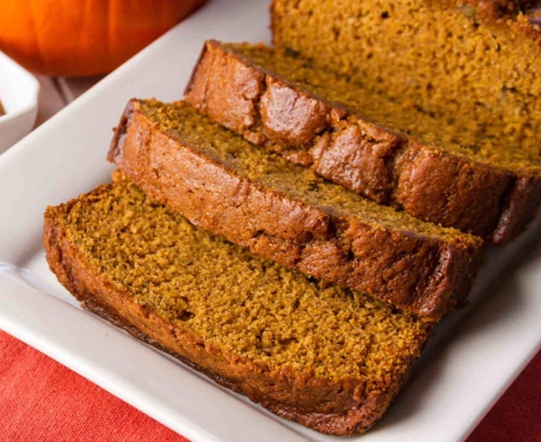

Pumpkin Bread

Original Recipe Link
Description
This recipe will walk you through making your favorite pumpkin loaf recipe from start to finish!
Ingredients
- 2 cups unsifted all-purpose flour
- 1/2 teaspoon salt
- 1/2 teaspoon baking powder
- 1 teaspoon baking soda
- 1 teaspoon ground cloves
- 1 teaspoon ground cinnamon
- 1 teaspoon ground nutmeg
- 2 cups sugar
- 3/4 cup butter, softened
- 2 eggs
- 1 can (1lb) pumpkin
Steps
- Begin by combining the flour, salt, baking powder, baking soda, and spices. I like to add everything in neat little piles in case I lose track of what I’ve added.
- Whisk well and set aside
- Combine the butter and sugar in a large bowl or in the bowl of an electric mixer. Beat just until combined. It will look crumbly.
- Add the eggs one at a time, beating well after each addition. Continue beating for a few minutes until light and fluffy.
- Add the pumpkin. Beat until combined. It will look a little grainy - that's okay.
- Add the dry ingredients to the pumpkin mixture. Beat on a low speed until just combined.
- Transfer the batter to loaf pans. Bake for 65-75 minutes, or until a cake tester comes out clean.
- Let the loaves cool in the pan for about 10 minutes, then turn out onto a rack to cool completely.
- That's all there is to it. Enjoy!